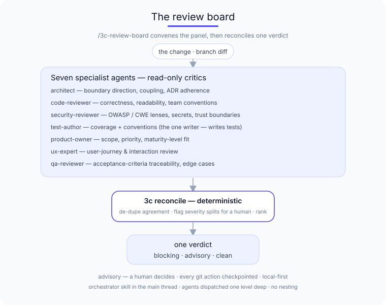
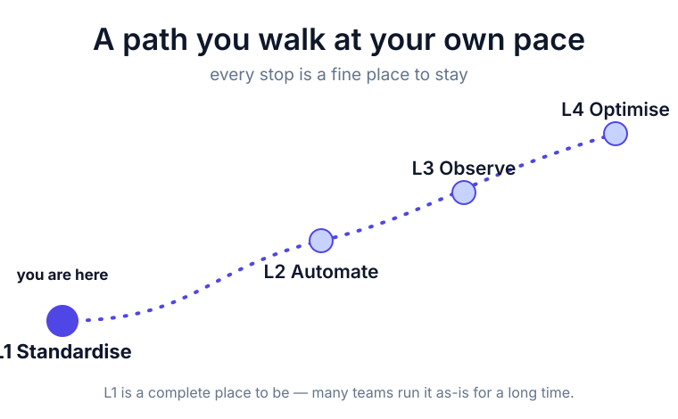
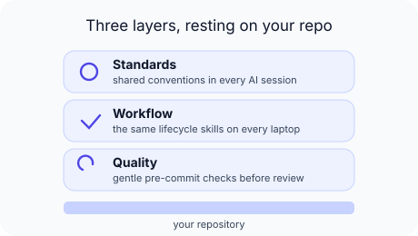

3C · Claude Code Coach · a field guide
Coding sessions under your control.
Your team's AI, finding the same page — together.
A crew of specialist agents reviews every change against your
team's standards — architecture, code, security, tests, product,
UX, QA — and hands you one verdict. The assistant types; you
decide. Local-first, and one git revert takes it all back out.



npm install git+https://github.com/kgn-git/3C#v1.7.3
npx 3c setup
A few commands scaffold .claude/ into
your repo — standards, the workflow skills, the review crew, and the
quality gates that every team member's AI assistant works from.
Nothing leaves your machine; one git revert takes it all back out.
Come in the way that fits you
I'm an engineer
See what L1 actually ships today — the nine features, the four workflow skills, the pre-commit hook, and the one-command rollback. No commitment to read it.
I'm an engineering leader
What L1 costs, what it buys, how succession works, and where it deliberately stops. The page you can forward without over-claiming.
Print-ready infographics
The same governed workflow as A4 portrait deliverables — browseable online, downloadable as PDF.
How a skills library ships software
Five diagrams of the governed workflow — orchestration, lifecycle, quality gates, principles map, and the SD-007 prior-issue merge gate sequence. The architecture in one read.
A day in the life of a developer using 3C
Ten pages following one engineer (Maya) through her L2 day — the slash commands she runs, the gates she passes, the rules that coach her, and the things she never types by hand.
What we're learning. Teams tell us the pre-commit hook is the moment it clicks — but your context might differ. If something here doesn't match what you see, we'd genuinely like to know: start a discussion.
Open source: kgn-git/3C. 3C — Claude Code Coach — is open and MIT-licensed; there's no pricing, no sign-up, and no code leaving your machine to make it work.